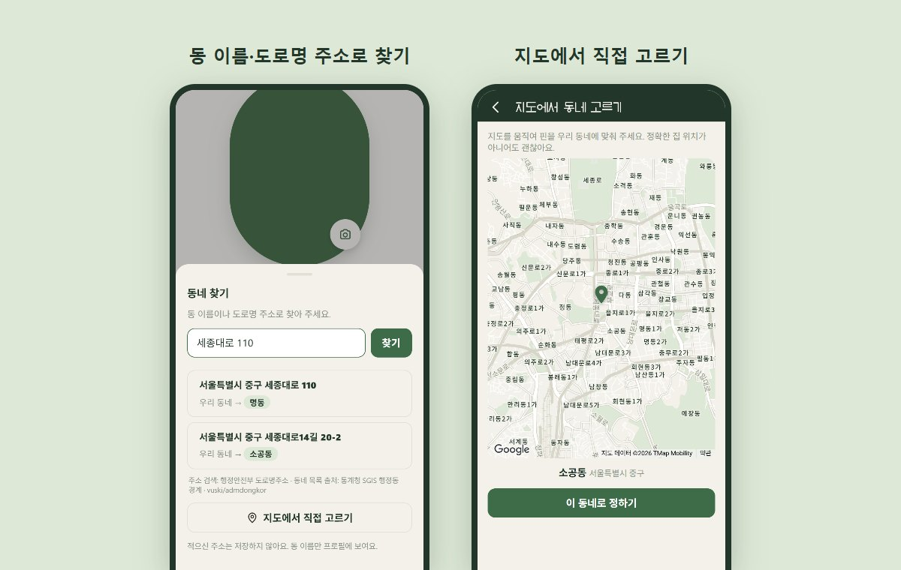
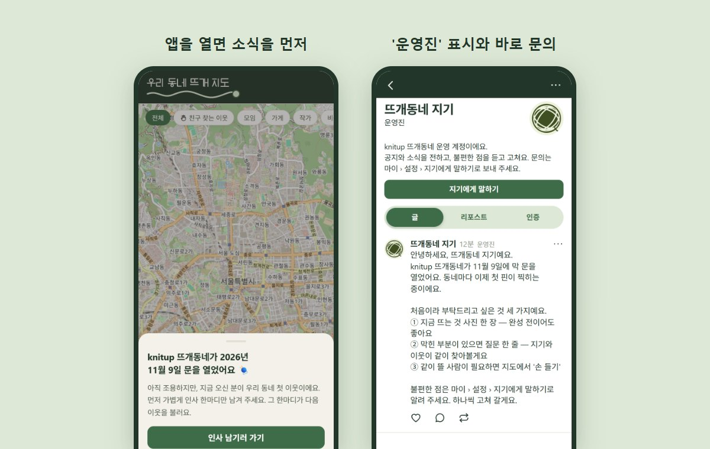

뜨친 찾는 중 ‘손 들기’
- 마이 › 설정 › 뜨개 친구 찾기
- 손 들기 켜기 (14일 동안)
- 지도에 손 든 표시가 떠요
knitup이 만든 동네 뜨개 커뮤니티
지도에서 가까운 뜨개인을 만나고, 같이 뜰 모임을 열고, 내 뜨개 단계를 한눈에 확인하세요.
앱스토어·구글 플레이에서 ‘knitup’을 검색하세요
기능
근처 뜨개인·모임·가게가 한 지도에 보여요. 친구를 찾는 중이면 ‘손 들기’로 알릴 수 있어요.
정확한 위치 대신 약 200m 단위로 흐리게 표시돼요
할 줄 아는 기법을 고르면 기법 맵 위에 내 단계가 표시돼요. 다음에 배울 기법과 먼저 알아야 할 기법도 함께 보여요.
볼밴드 사진을 찍으면 실 이름·색·규격을 읽어 정리해 줘요. 작품을 인증할 때 내 실함에서 고르면 남은 볼 수가 자동으로 줄어요.
사용법
자주 쓰는 기능을 순서대로 안내해요.
가입
구글 또는 애플 계정으로 로그인
프로필·동네
사진, 동네, 닉네임 입력
내 뜨개 단계
할 줄 아는 기법 체크
지도 둘러보기
가까운 이웃과 모임 확인
앱의 마이 › 설정 › 지기에게 말하기로 물어보세요.
자주 묻는 질문 보기 →업데이트 소식
동 이름이나 도로명 주소로 우리 동네를 찾을 수 있고, 지도에서 직접 고를 수도 있어요. 적으신 주소는 저장하지 않고 동 이름만 프로필에 보여요. 글에서 프로필을 보다가 뒤로 가기가 반복되던 문제도 고쳤어요.

새 소식이 있으면 앱을 열 때 한 번 알려 드리고, 닫은 뒤에도 커뮤니티 맨 위에서 다시 볼 수 있어요. 운영 계정 '뜨개동네 지기'에는 '운영진' 표시가 붙었고, 프로필에서 바로 문의를 보낼 수 있어요.

App Store와 Google Play에 정식 출시됐어요. 지도에서 동네 뜨개 친구를 찾고, 모임을 열고, 내 뜨개 단계와 실함을 정리해 보세요.
1기 서포터즈 · 준비 중
앱을 함께 다듬어 갈 서포터즈를 준비하고 있어요. 모집이 시작되면 knitup 뉴스레터로 가장 먼저 알려 드릴게요.
App Store 또는 Google Play에서 ‘knitup’을 검색해 설치하세요. 뜨개동네는 knitup 앱 안의 동네 커뮤니티예요.
아니요. 정확한 좌표는 저장하지 않고 약 200m 단위로 흐린 위치만 지도에 보여요. 지도 공개도 직접 끌 수 있어요.
네. 내 뜨개 단계로 비슷한 수준의 이웃과 모임을 찾을 수 있어요.
개인정보 보호
이웃을 만나는 앱이라 위치와 연락에 특히 조심하고 있어요. 지금 이렇게 지키고 있습니다.
지도에는 약 200m 단위로 흐린 위치만 보여요. 지도 공개는 언제든 직접 끌 수 있어요.
운영진과 운영 AI는 신고된 메시지 한 건만 확인해요. 그 밖의 대화는 열어 보지 않아요.
이벤트에 선정된 분만 입력하고 운영진만 봐요. 발송 30일 뒤 자동으로 지워져요.
광고 효과 측정(Meta)에는 가입·모임 참여 같은 앱 이용 기록과 기기 식별자만 쓰고, 이메일·닉네임·위치는 넣지 않아요.
회원 정보는 본인만 고칠 수 있어요. 운영진이 이메일·배송지 같은 정보를 조회하면 접근 기록이 남아요.
마음이 바뀌면 20일 안에 다시 로그인해 되살릴 수 있어요. 그 뒤에는 계정과 사진이 모두 지워져요.
앱 안에서 결제 정보는 받지 않아요. 내 실함 정보는 실 데이터 정리를 위해 운영진이 볼 수 있어요. 개인정보 문의: knitup.official@gmail.com